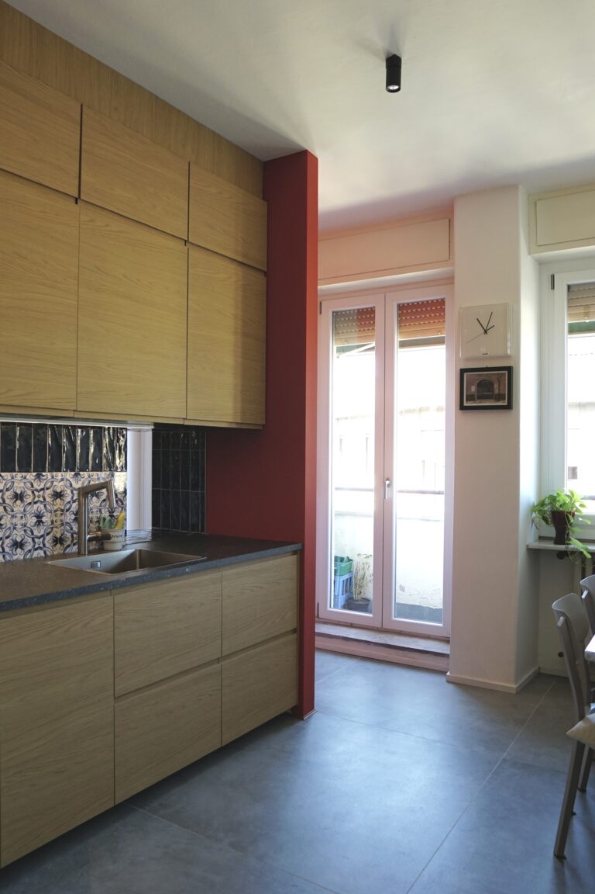
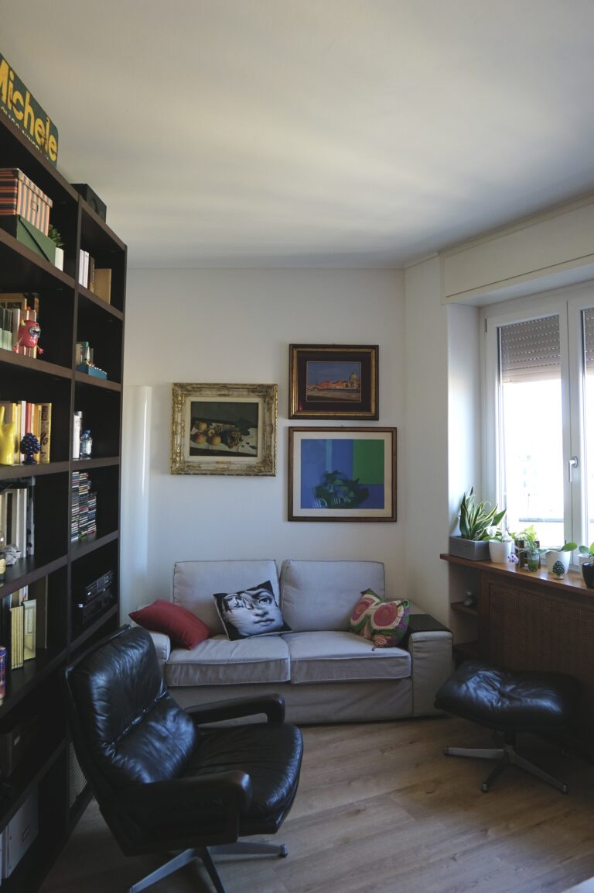
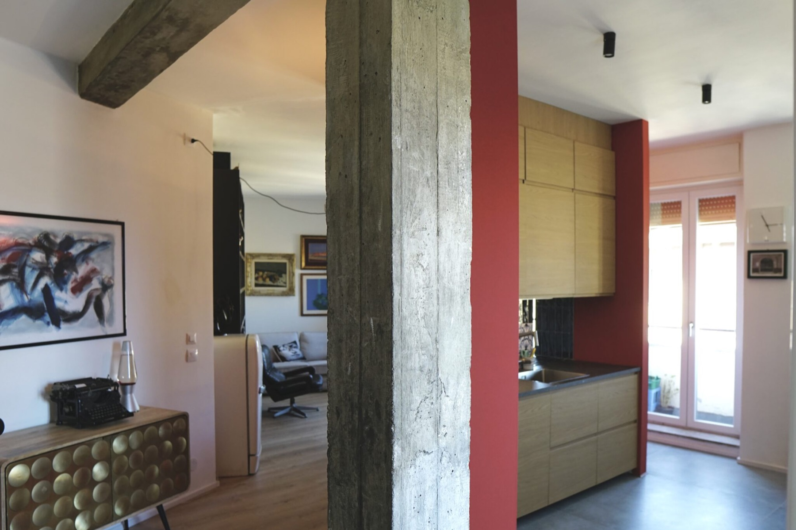
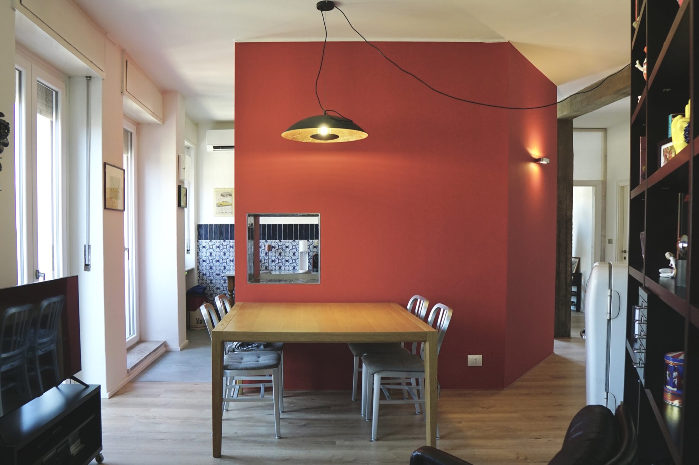
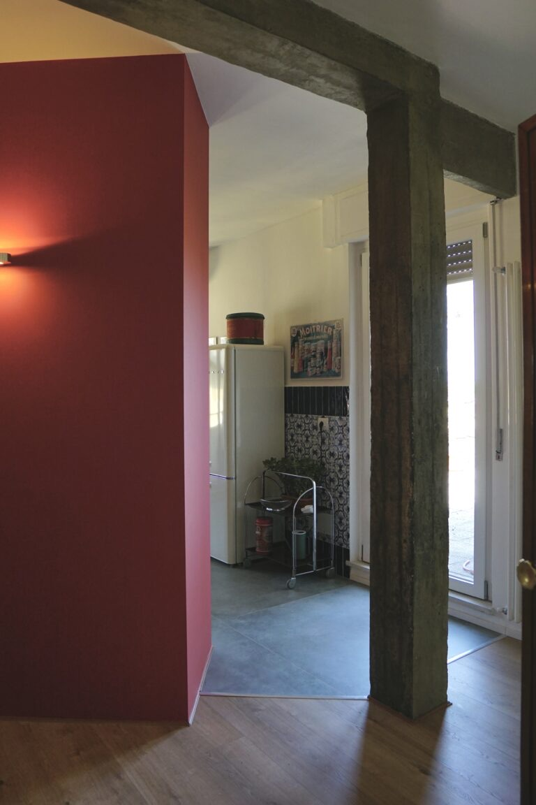
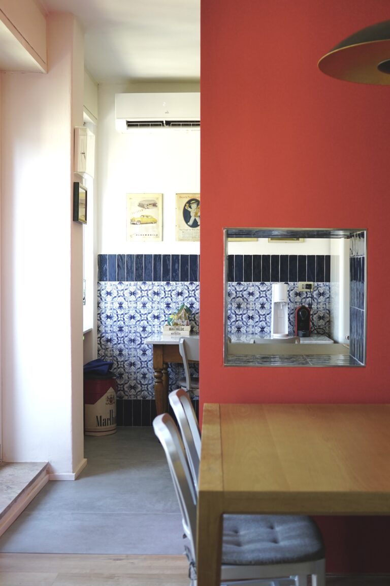
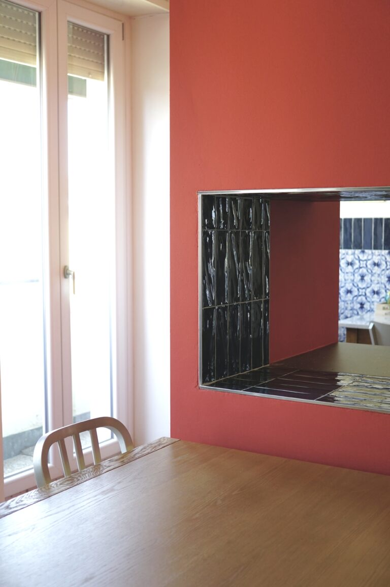
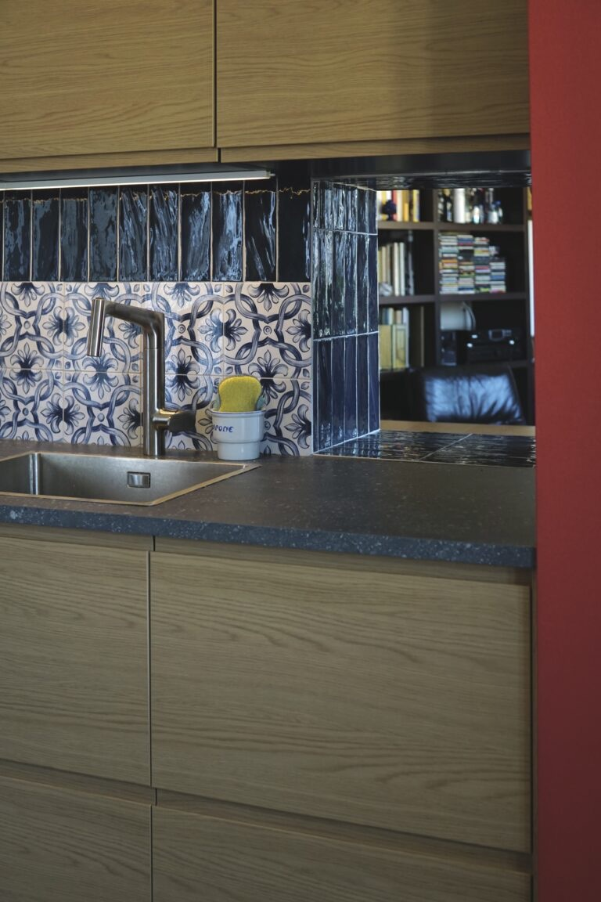
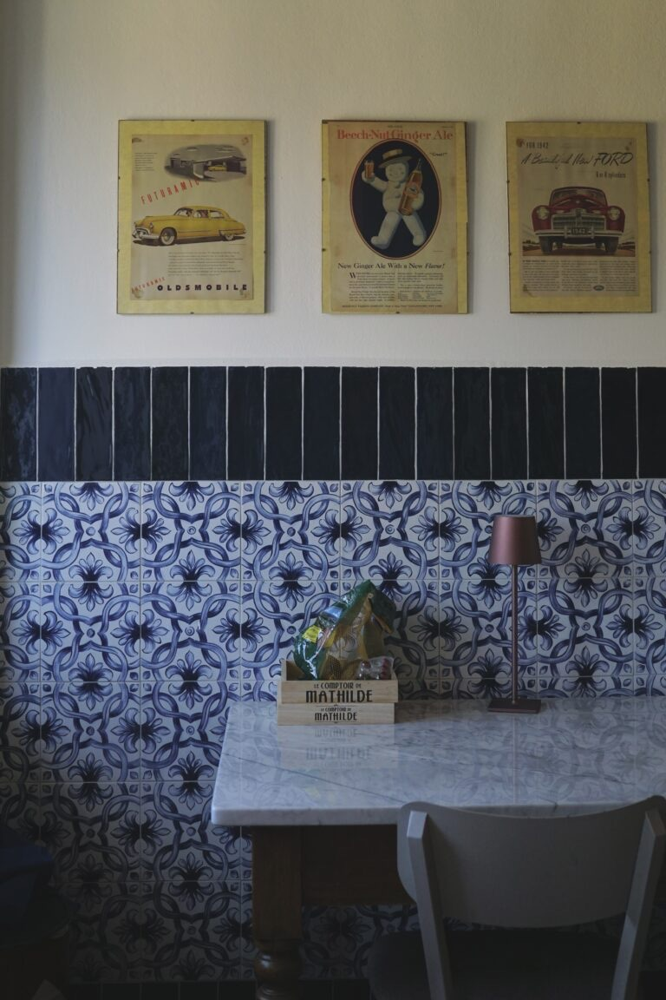
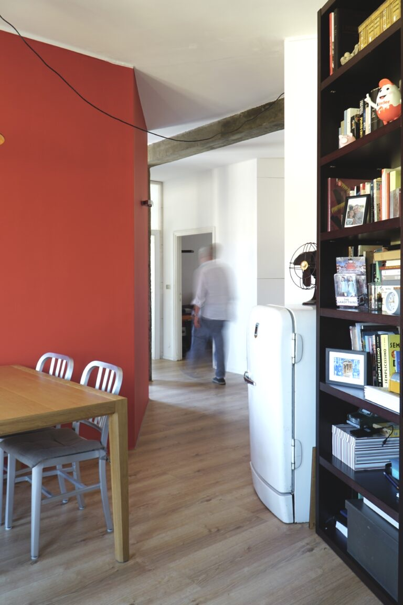

Casa Masolino
- Location
- Milan
- Year
- 2026
A home for a copywriter, on the top floor.
70 m² organised around the kitchen, the beating heart of the house: inclined walls draw small stages of domestic life, perspectives opening one into another.
The kitchen, in red, is the hearth. It is the space of Michele, who loves having friends over, cooking and sitting at the table. This is where the serving hatch comes from: not only for food, but for a few more words with whoever is cooking.










01 / 10